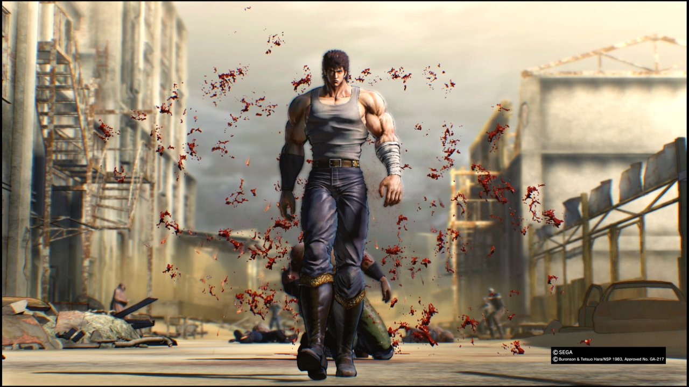

About Kenshiro
Kenshiro is the lead character from Fist of the North Star - a Manga / Anime character written by Buronson (Yoshiyuki Okamura) and illustrated by Tetsuo Hara.
Fist of the North Star is a part of the martial arts and post-apocalytic genres.
A worldwide nuclear war sometime in the 1990s has resulted in the destruction of most of civilization, turning the world into a desert wasteland. The remnants of mankind fight over whatever supply of food and uncontaminated water still remaining as the strong prey on the weak. Kenshiro is the successor to Hokuto Shinken, an ancient martial art of assassination that trains its practitioners to kill from within an opponent's body through the use of hidden meridian points. Kenshiro wishes to live his life in peace, but after he is separated from his fiancée Yuria by a jealous rival, he begins his journey to become the savior of the post-apocalyptic world, defending the weak and innocent from the many gangs and organizations that threaten their survival. Along the way, Kenshiro meets a young thief named Bat and an orphaned girl named Lin, who join him as his traveling companions and bear witnesses to Ken's many battles.
Source Fist of the North Star - Wikipedia
Kenshiro is the youngest of four adopted sons trained by the previous Hokuto Shinken successor, Ryuken. As a child, he was sent to Japan, along with his future nemesis Raoh and Raoh's brother Toki, to escape from their homeland, the war-torn Land of Asura. Along with Raoh, Toki and a fourth student named Jagi, Kenshiro, the youngest of the four, was trained in the art of Hokuto Shinken and eventually named successor by Ryuken. After surviving the nuclear war, he tried to live in peace with his fiancée Yulia, until Jagi instigates Shin, a jealous rival from the Nanto Koshuken school, to challenge, then defeat Kenshiro. Shin then engraved the iconic seven scars on Kenshiro's chest by stabbing Kenshiro with his fingertips and left him for dead. Prior to this event, he was more forgiving of his enemies, as shown in a flashback of Jagi's failed assassination attempt against him, in which Kenshiro chooses to spare Jagi's life after defeating him; lucky for Jagi. When Kenshiro later fights his old rivals in the present, particularly Shin, Jagi, and Raoh, they all remark on Kenshiro's acquired mercilessness.
Source Kenshiro - Wikipedia
Kenshiro walking in the post-apocalypse landscape - (Game version).
Kenshiro's Relatives
- Hyoh (biological older brother)
- Roah (adoptive older brother)
- Toki (adoptive older brother)
- Jagi (adoptive older brother)
- Yulia (fiancee)
- Ryuken (adoptive father)
Fist of the North Star
Kenshiro can be seen in action in the following Fist of the North Star formats.
- Fist of the North Star The Movie (ANIME) (DVD)
- Fist of the North Star (1995 film)
- Fist of the North Star: Ken's Rage 2 (Xbox 360)
- Fist of the North Star: Lost Paradise (Playstation 4)
- Fist of the North Star: The Legends of the True Saviour (DVD)
- Fist of the North Star: v. 1 (Paperback)
If you enjoyed learning about Kenshiro, you'll love the video below.
No copyright infringement intended. Video is for 18+ due to scenes of gore and violence.